Mechanical Engineering @ Carnegie Mellon University
4.00 GPA
Work
Formula SAE Rear WingCarnegie Mellon Racing
Rear Wing System LeadSolidWorks · Ansys Fluent · Ansys Mechanical
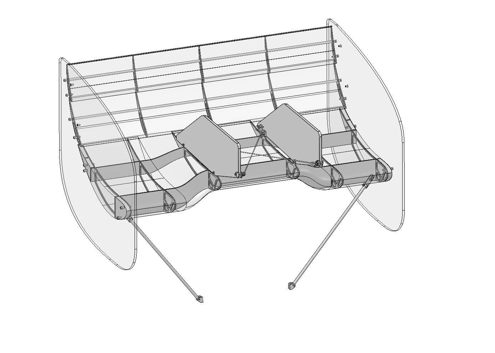
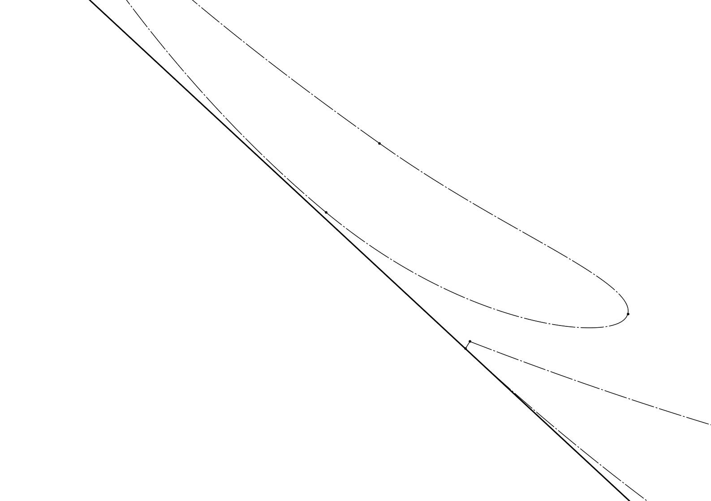
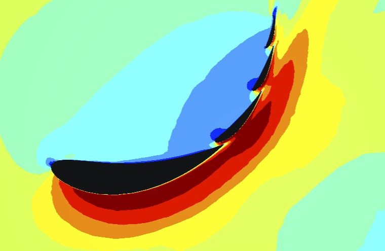
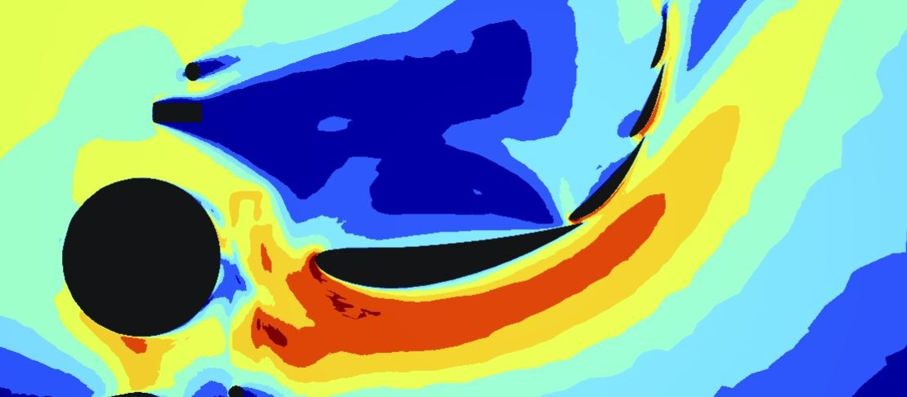
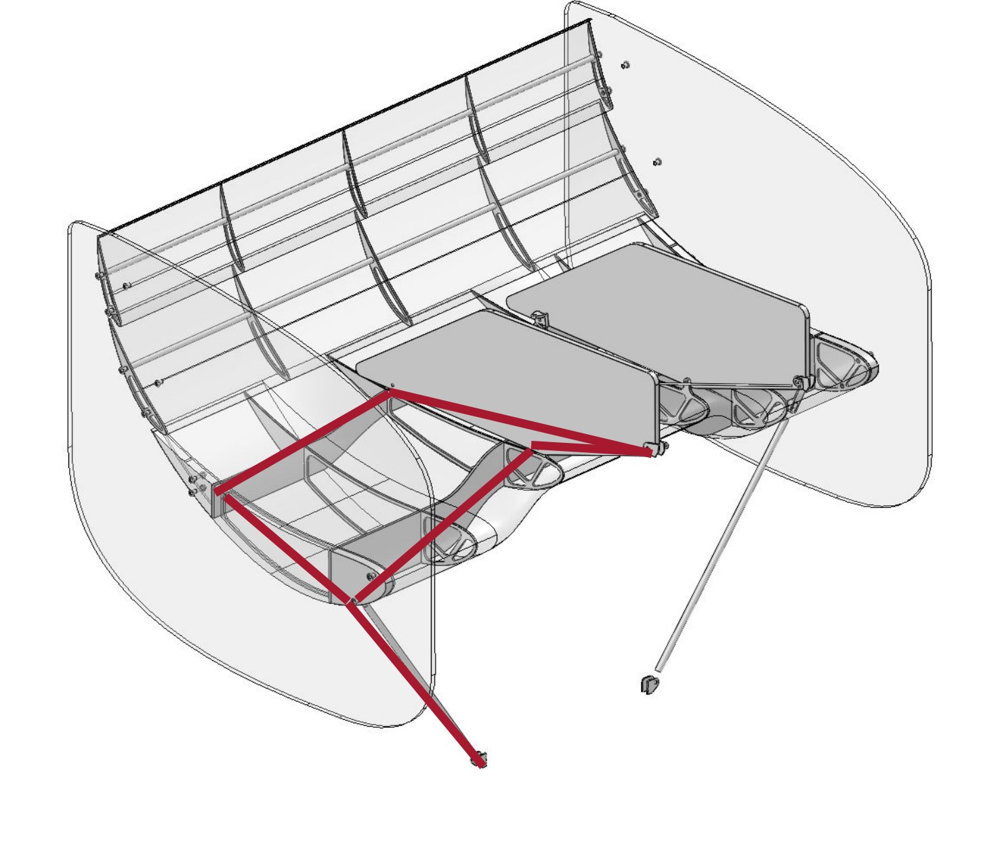
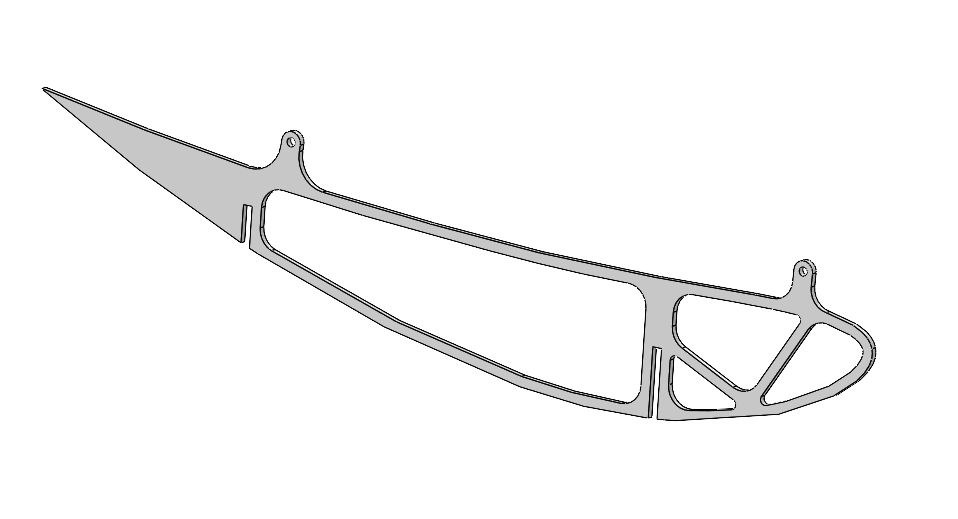
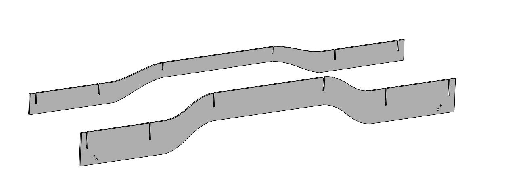
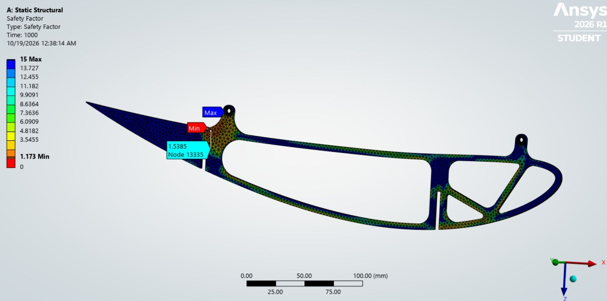
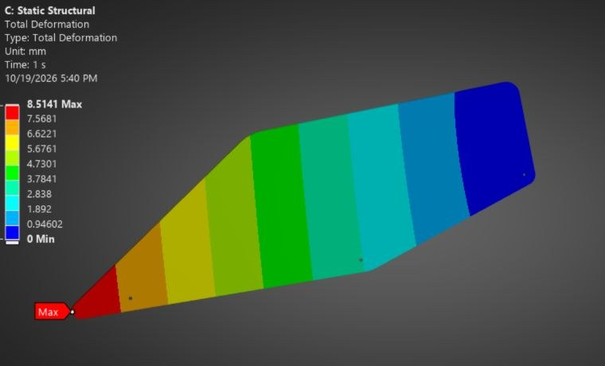
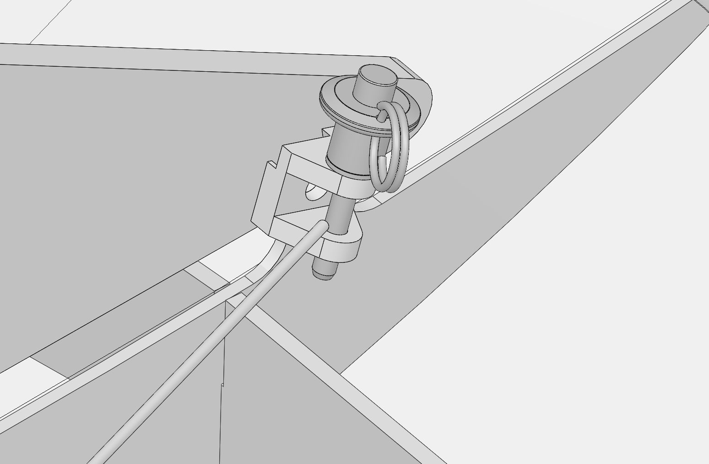
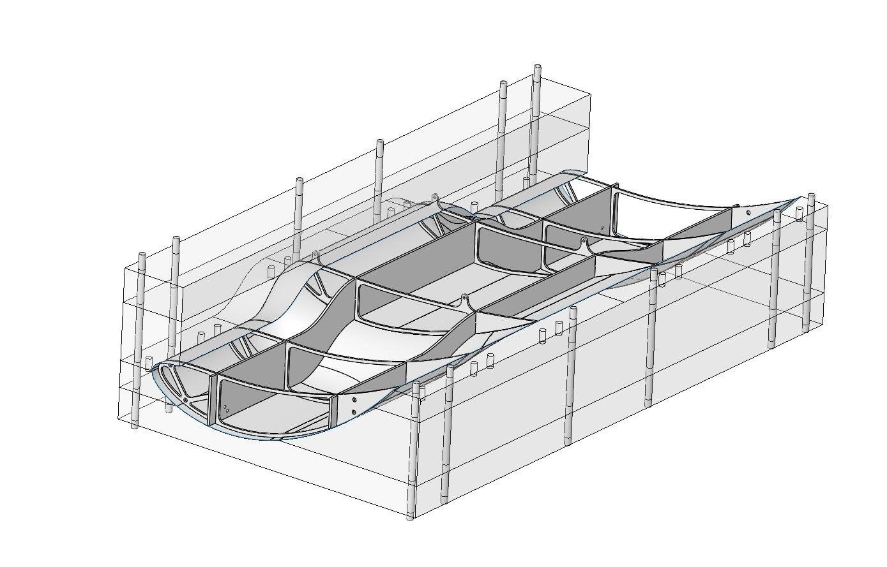
Goals
Maximize downforce in autocross and skidpad: the rear wing is currently the bottleneck for the aero package's downforce.
Minimize drag in endurance and acceleration.
Fix past problems: airfoil choice, a wing that was a pain to remove, slop in the mounting, and poor control of flap position and gap spacing.
Meet FSAE rules: stay inside the rear aero bounding box, keep the ready-to-move light visible, pass the inspection push test for deflection, and mount to the main roll hoop only at braced nodes.
Theory
Popular "high-downforce" airfoils (MSHD, S1223) use large camber and produce strong lift as standalone sections, but perform poorly in a multi-element chain.
Large camber creates a strong adverse pressure gradient on the suction side. When free-stream air re-enters the multi-element chain, it hits a boundary layer already fighting that gradient, causing sharp pressure spikes.
Given realistic manufacturing tolerances, these pressure spikes make the wing unstable.
A multi-element array generates effective camber through element interaction, not through individual airfoil camber, so lower-camber sections avoid the adverse pressure gradient and spikes.
Airfoil development
Validation: airfoils were chosen from 2D CFD, then checked in 3D against the previous year's wing.
Main element chord: swept a range of chord lengths with the flaps scaling alongside, picking the one with the best flow attachment and suction.
Main element change: the main element wasn't accelerating air as much as a high-camber chain, and the main and secondary elements sat at similar angles of attack. Increasing main element camber and lowering its angle of attack let the secondary's angle of attack be pushed harder.
Gap spacing: each element's trailing edge lines up with the suction side of the next, which forces tight gaps.
Flap angle of attack: flap angles were raised to reattach flow separating off the secondary element, adjusting the flaps above each change to hold gap spacing and trailing-edge alignment.
Skidpad check: in steady cornering, downforce drops only slightly and flow stays attached on every element.
Main element is not a straight 2D extrusion: directly behind the driver's head the air is dirty and separates easily, so the center section runs a much gentler profile than the outboard sections.
Aero optimization
3 vs. 4 elements: compared both in CFD alongside a detailed mass estimate (carbon schedules, adhesive, foam, hardware, tabs, cables). The fourth element added very little downforce for its mass, so it was removed and the freed space was used to raise the whole wing into cleaner air.
Angle-of-attack sweep: starting from the preliminary angles, simulated every combination of main, secondary, and tertiary angles on a grid, then re-centered the grid on the best result and swept again until the improvement leveled off.
Gap and overhang tolerancing: perturbed each gap and overhang by a couple of millimeters, fit a quadratic response surface to the results, and found the window where downforce stays within an acceptable band. Those windows became the manufacturing tolerances; the upstream gap needs the tightest one, since it conditions the flow for every element behind it.
Endplate size: swept the endplate extension below the main element and trimmed it to the smallest size that kept full performance.
Swan necks: the LiDAR mount on the roll hoop sheds a wake onto the wing. Large swan-neck plates act as fences that keep that dirty air in the middle of the span; small swan necks let it spread and cost significant downforce.
Structure & mounting
Main element: carbon skin over waterjet 6061-T6 ribs slotted into carbon spars. The two swan-neck ribs carry the mounting lugs, and the outer ribs bolt to the endplates through foam ribs so the endplates don't clamp onto the skin.
Flaps: carbon skins over aluminum ribs on a carbon rod spar, bolted to the endplates through aluminum hardpoints. The endplates are structural as well as aerodynamic.
Swan necks: carbon plates with a lighter layup in the purely aerodynamic section, bolted to 4130 steel tabs welded to the main roll hoop.
Cables: crossed, pre-tensioned cables run from eyebolt tabs on the roll hoop to the swan necks, eliminating the mounting slop of past wings. Quick-release pins free them for removal.
Struts: carbon tubes with rod ends carry most of the vertical load from the front spar down to the lower roll hoop tabs. They sit as far outboard as buckling allows to reduce bending along the span.
Structural analysis
Load case: worst-case combination of peak downforce and drag, maximum side force, a 5 g bump, and 1.7 g lateral acceleration.
Hand calc: a rigid-body free-body diagram of the wing solves the reactions at the swan-neck tabs, cables, and struts, which feed every downstream FEA.
FEA: every part on the critical load path (ribs, roll hoop tabs, eyebolt tab, cable-pin tab, strut-spar tab) checked in Ansys Mechanical against a per-part factor-of-safety target. Flap rib loads were mapped from the CFD pressure distribution.
Composites: the carbon swan neck was modeled as a layered composite with bonded aluminum inserts, checking ply failure and deflection.
Hand checks: Euler buckling to size the strut tubes and placement, eyebolt thread stripping, and combined axial and bending stress on the eyebolts and rod ends from misalignment.
Manufacturing & jigging
Main element: female lap-joint mold. The rib-and-spar structure is bonded first in 3D printed jigs that keep every rib square to the spars, then the bottom skin is laid up and the mold's lap-joint section is swapped for the full upper half to close the airfoil.
Secondary element: male mold; the cured skin is opened, and a rib-and-rod frame (aligned on glass with laser-cut spacers) and a foam trailing edge are bonded inside.
Tertiary element: male mold with a female bottom section that forms the Gurney flap, trimmed to height with a sled jig.
Flat parts: swan necks, endplates, and spars are laid up on glass panels; every part gets a sled jig for trimming.
Integration: a car-scale jig locates the wing in six degrees of freedom off the ground and chassis tabs, the swan necks are match-drilled to the roll hoop tabs through a drill guide, and the struts are bolted in.
Formula SAE DRSCarnegie Mellon Racing
Drag Reduction System LeadSolidWorks · Ansys Mechanical · MATLAB
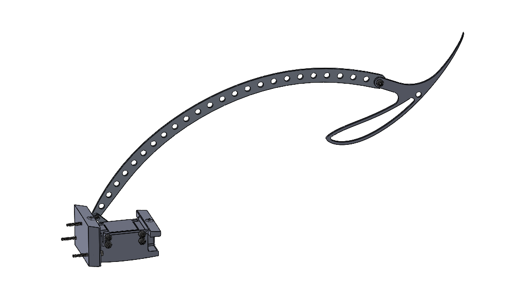
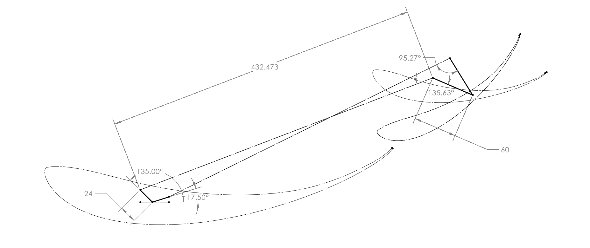
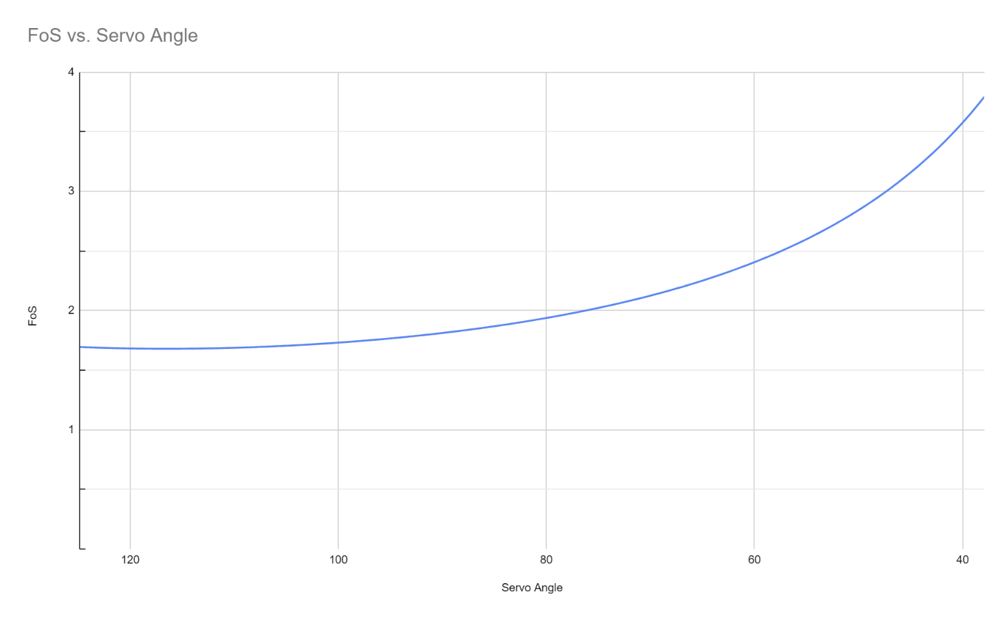
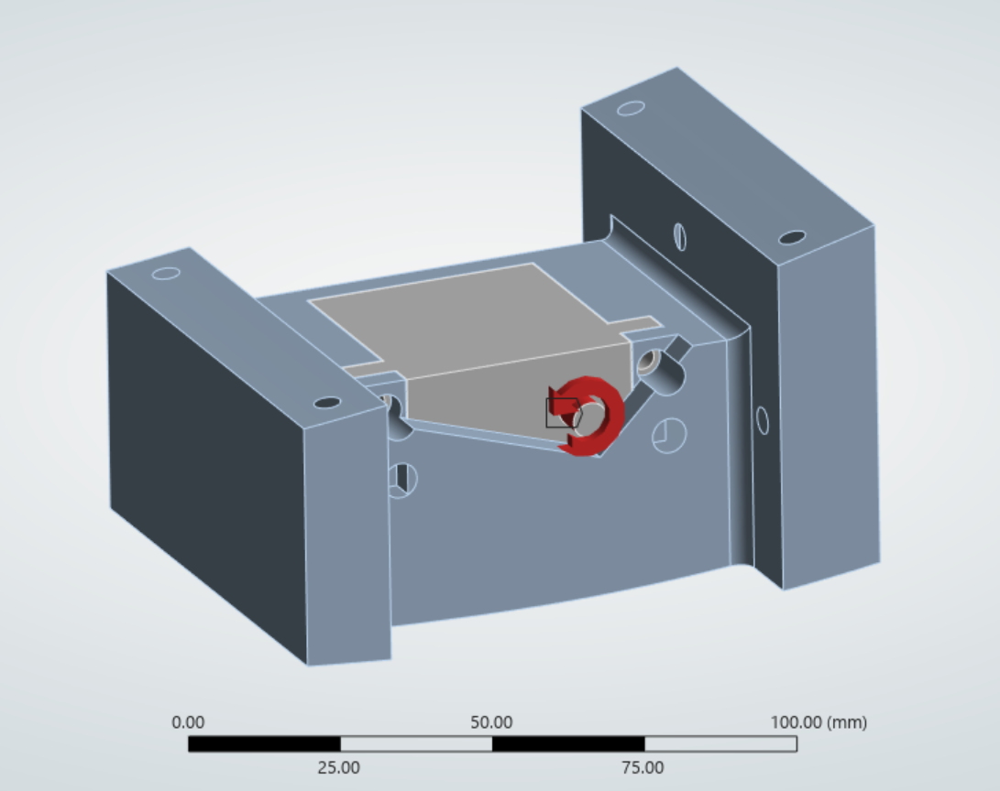
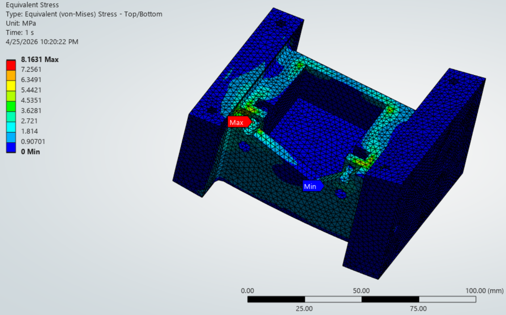
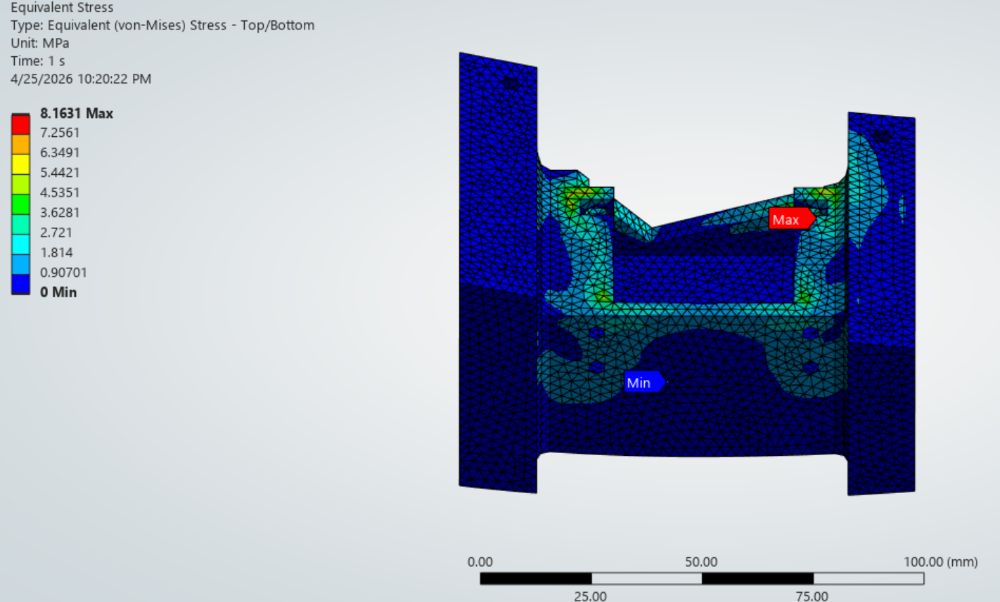
Goal
Electronically control high- and low-drag configurations of the rear wing.
High-drag/high-downforce configuration holds the rear wing element at 30° AoA.
Low-drag/low-downforce configuration rotates all element to 0° AoA.
Design challenges
The system requires redundancy.
Servos are weak relative to the aerodynamic loads they must overcome.
Mass must be minimized across the servo, housing, and linkages.
Servo-generated internal moments risk transferring load onto the wing's carbon skin, which would fracture it.
Redundancy
Every element except the main element rotates on a rod running through it.
If the servo loses power or a linkage fails, the system must fail closed — reverting to the high-downforce configuration.
Achieved by placing the rotation axis behind the airfoil's center of pressure, so aerodynamic force alone drives the element closed.
Center of pressure is determined via 2D CFD analysis on each airfoil.
Weak servo
A low-mass, low-torque servo was selected to actuate the element.
Torque output is increased via a four-bar linkage mechanism, trading angular displacement for mechanical advantage.
Optimal linkage geometry was chosen through four-bar linkage synthesis, maximizing mechanical advantage across the full angular displacement range.
Generated torque was plotted against resistive aerodynamic torque to confirm the servo could actuate the element at every point in the range.
Minimizing mass
Started with a simple 2D extrusion of the linkage and ran FEA to identify stress concentrations.
Removed material from low-stress regions to reduce mass.
Large internal loads
Despite being weak relative to aerodynamic forces, the servo generates enough force to damage the carbon skin if mounted directly against it.
Designed a servo housing that redirects all load into the carbon/honeycomb sandwich structure, which is significantly stronger than the skin alone.
Cycloidal Drive GeneratorPersonal Project
Python · SolidWorks API
►
Developed an interactive app for designing cycloidal drives, allowing users to define certain parameters.
Prevented invalid gear geometry by implementing parameter-checking algorithms.
Automated the 3D modeling of gear components using the SolidWorks API, eliminating CAD modeling time.
Automated a manufacturing pipeline by scripting the export from SolidWorks, creating 3D printable files.